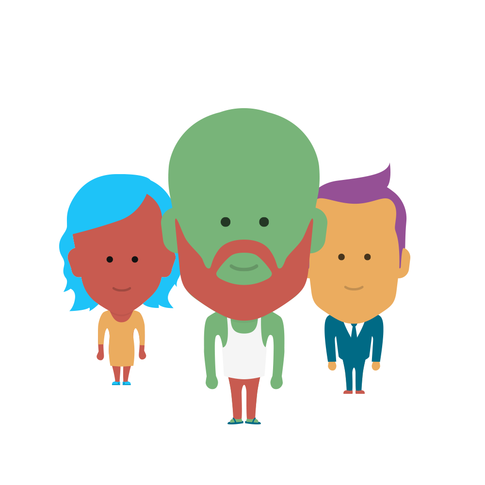

<!--
@license
Copyright (c) 2015 The Polymer Project Authors. All rights reserved.
This code may only be used under the BSD style license found at http://polymer.github.io/LICENSE.txt
The complete set of authors may be found at http://polymer.github.io/AUTHORS.txt
The complete set of contributors may be found at http://polymer.github.io/CONTRIBUTORS.txt
Code distributed by Google as part of the polymer project is also
subject to an additional IP rights grant found at http://polymer.github.io/PATENTS.txt
-->

<link rel="import" href="../../bower_components/polymer/polymer.html">
<link rel="import" href="../../bower_components/neon-animation/neon-animated-pages.html">

<link rel="import" href="../../bower_components/neon-animation/neon-animation.html">
<link rel="import" href="../../bower_components/neon-animation/animations/slide-from-right-animation.html">
<link rel="import" href="../../bower_components/neon-animation/animations/slide-left-animation.html">

<link rel="import" href="../../bower_components/neon-animation/neon-animatable.html">

<script src="../../bower_components/node-uuid/uuid.js"></script>
<script src="../../scripts/crypto-aes.js"></script>


<dom-module id="lo-newuser">
    <style>

      :host {
        display: block;
        width: 100%;
        height: 100%;

          background-image: url("../../images/bg-blue-structure.png");
  background-size: 100vh;
  background-repeat: repeat-x;
      }


      .canvas {
        @apply(--layout-vertical);
        @apply(--layout-center-center);
        width: 100vw;
        height: 100vh;
        margin: 0px;
        padding: 0px;
      }


      .intro {
        background-color: transparent;
        height: 60vh;
        width: 100vw;
        margin: 0px;
        padding: 0px;
        @apply(--layout-horizontal);
        @apply(--layout-center-center);
      }

      .intro img {
        width: 100%;
        max-width: 450px;
        margin: 0 auto;
      }


      neon-animated-pages {
        height: 100%;
      }

      lo-qrreader {
        margin: 0px;
        height: 100vh;
      }


      .normalbutton {
        font-family: 'Open Sans', sans-serif;
        font-weight: 600;
        font-size: 16px;
        -webkit-font-smoothing: antialiased;
        padding: 20px;
        margin: 0px 0px 10px 0px;
        background-color: rgba(255,255,255,1);
        color: var(--page-color);
        outline: 0;
        border: 1px solid var(--page-color);
        text-align: center;
        border-radius: 5px;
        width: 200px;
      }


      .normalbutton:hover {
        box-shadow: 2px 2px 0px rgba(0,0,0,0.2);
      }

      .normalbutton:active {
        box-shadow: 0px 0px 0px rgba(0,0,0,0.2);
      }


      .smallbutton {
        font-family: 'Open Sans', sans-serif;
        font-weight: 600;
        font-size: 11px;
        text-decoration: underline;
        -webkit-font-smoothing: antialiased;
        padding: 20px;
        margin: 0px 0px 10px 0px;
        background-color: rgba(255,255,255,1);
        color: var(--primary-darkgray);
        outline: 0;
        border: none;
        text-align: center;
      }

      h2 {
        font-weight: 300;
        -webkit-font-smoothing: antialiased;
        line-height: 125%;
        color: white;
        margin: 0px;
        padding: 0px;
      }

    </style>
  <template>

    <iron-localstorage id="localstorage" name="lo-public" value="{{publickey}}">
    </iron-localstorage>

    <iron-localstorage id="localstorage" name="lo-private" value="{{privatekey}}">
    </iron-localstorage>

    <iron-localstorage id="localstorage" name="lo-device" value="{{deviceid}}"
    on-iron-localstorage-load-empty="createDeviceID">
    </iron-localstorage>

    <lo-mqtt connected="{{mqttconnected}}"
      auto-connect
      deviceid="{{deviceid}}"
      on-message-received="msgreceived"
      topic="{{deviceid}}" id="lomqtt"></lo-mqtt>

    <neon-animated-pages id="pages" selected="{{selected}}" entry-animation="{{entryAnimation}}" exit-animation="{{exitAnimation}}">

      <neon-animatable>
        <div class="canvas">
<!--        <h2>Locals</h2>
         <p>We gaan dan nu een nieuwe user aanmaken is dat goed?</p> -->
        <div class="intro"></div> 
        <button class="normalbutton" on-tap="createUser">Ik ben nieuw</button>
        <button class="smallbutton" on-tap="syncUser">Ik heb al een user</button>
      </div>
      </neon-animatable>

      <neon-animatable>
        <div class="canvas layout vertical center-center color">
        <h2>Registratie voltooid.</h2>
        <p>Je hebt een nieuwe gebruiker aangemaakt op dit toestel.</p>
        <button on-tap="reload">Ga verder</button>
      </div>
      </neon-animatable>

      <neon-animatable>
        <lo-qrreader on-got-code="processQRCode"></lo-qrreader>
      </neon-animatable>

    </neon-animated-pages>
  </template>
  <script>
  (function() {
    'use strict';

    var syncdevice;

    function importPage(url){
    return new Promise(function(resolve, reject){
      Polymer.Base.importHref(url, function(e){
        resolve(e.target.import);
      }, reject);
    });
  };

    Polymer({
      is: 'lo-newuser',

      properties: {

        promise: {
          type: String,
          observer: "_promise"
        }
        
      },

      ready: function(){
        var that = this;
        this.addEventListener('back', function(){
          that.back();
        });
      },

      _promise: function(){
        console.log("Promise changed: ", this.promise);
      },

      attached: function(){
        this.selected = 0;
        this.entryAnimation = 'slide-from-right-animation';
        this.exitAnimation = 'slide-left-animation';
      },

      reload: function(){
        window.location = "/";
      },

      back: function(){
        this.selected = 0;
        body.removeChild('lo-qrreader');
      },

      createDeviceID: function(){
        var deviceid = uuid.v4();
        this.deviceid = deviceid;
      },

    createUser: function(){
      var publickey = uuid.v4();
      this.publickey = publickey;
      var privatekey = uuid.v4();
      this.privatekey = privatekey;
      console.log('--- Created UUID ---');
      console.log('--- publickey: ', this.publickey, ' - privatekey: ', this.privatekey, ' - deviceid: ', this.deviceid, ' ---');
      // Create chatroom for this user
      //this.$.loxmpp.createRoom(userid, this.openfireuser1, this.openfireuser2);
      //this.selected=1;
      window.location = "/";
    
    },

    syncUser: function(){
      var that = this;
      that.selected = 2;
      this.promise = "SYNC";
      importPage("elements/lo-qrreader/lo-qrreader.html").then(function(){
        //var element = document.createElement("labs002-stage");
        //body.appendChild(element);
        
      }, function(err){
        console.log(err, "error");
      });
    },

    processQRCode: function(e){
      console.log("Processing QR code: ", e.detail.partner, " Promise: ", this.promise);
      //publish topic e.detail.partner body SYNC
      switch(this.promise){
        case "SYNC":
          console.log("Sync scanning");
          syncdevice = e.detail.partner;
          this.topic = e.detail.partner;
          var mytopic = this.deviceid;
          //this.$.lomqtt.subscribe(mytopic);
          this.$.lomqtt.send("sync/"+e.detail.partner, "SYNC1|"+mytopic, 2);
        break;
        case "SYNC2":
          console.log("ready to dispatch OK event");
          this.publickey = e.detail.partner;
          this.$.lomqtt.send("sync/"+syncdevice, "SYNC3|"+this.deviceid, 2);
        break;
        case "SYNC4":
          console.log("ready to dispatch OK event");
          this.privatekey = e.detail.partner;
          this.$.lomqtt.send("sync/"+syncdevice, "SYNCOK|"+this.deviceid, 2);
          window.location = "/";
        break;
      }
      
      //this.$.loxmpp.sendMessage(partner, "SYNC", null, null, null);
    },

    msgreceived: function(e){
      var commandarray = e.detail.msg.split("|");

      var partner = commandarray[1];
      var command = commandarray[0];
      //var partner = e.detail.partner;
      console.log(e.detail.msg);
      switch(command){
        case "SYNC2":
          console.log("Receiving public key");
          //this.publickey = e.detail.msg[1];
          this.promise = "SYNC2";
          //this.$.lomqtt.send("sync/"+partner, "SYNC3|"+this.deviceid);
        break;
        case "SYNC4":
          console.log("Sync4 request");
          this.promise = "SYNC4";
        break;
      };
    }


    });
  })();
  </script>
</dom-module>
